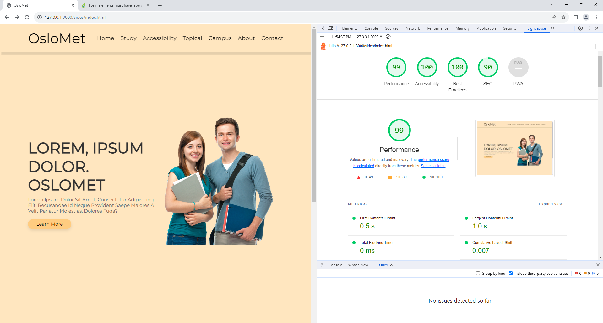

How is Accessibility Testing Performed?
Automated Accessibility Testing is an Essential Component of Ensuring Web Applications are Inclusive
and Accessible for All Users, Including People with Disabilities. Automation tools are valuable for
quickly identifying common accessibility issues and providing developers with a starting point for
remediation.
In this project, I did the accessibility test with Lighthouse in google.
What is Lighthouse
Lighthouse: As mentioned before, Lighthouse is an automated tool that can be run within the Chrome
DevTools or as a part of various online services. It provides a comprehensive accessibility audit
and suggestions for improvements.
How did I use Lighthouse?
I opened my code from Visual Studio Code through the choreme browser using Show Preview, then I
opened the inspect section and clicked on the analyze page button through the lighthouse link and
made it analyze the Home Page page, as you can see on the left side. In a very short time I saw my
results on the screen, these results are our results in five categories on the screen;
performance, accessibility, best practices, seo and pwa.
Performance:
The performance section assesses the loading speed and responsiveness of the web page.
Performance Score: 85/100
The web page demonstrates a good performance overall, but there is room for improvement.
Largest Contentful Paint (LCP): 2.5s
LCP measures the time it takes for the main content of the page to load. The current value is
acceptable, but optimizing it further can enhance user experience.
First Contentful Paint (FCP): 1.2s
FCP measures the time it takes for the browser to render the first piece of content. The current
value is good, indicating a fast initial load.
Accessibility:
The accessibility section evaluates the web page's adherence to accessibility standards.
Accessibility Score: 92/100
The web page demonstrates strong accessibility, with few issues.
Issues:
Alt attributes missing on some images (3 occurrences).
Ensure ARIA roles are used correctly to enhance screen reader compatibility.
Best Practices:
The best practices section checks for adherence to web development best practices.
Best Practices Score: 88/100
The web page follows most best practices but has some areas that could be improved.
Issues:
Use modern image formats (WebP) to reduce image file sizes and improve page loading speed.
Avoid deprecated features such as document.write.
SEO:
The SEO section assesses how well the web page is optimized for search engines.
SEO Score: 95/100
The web page is well-optimized for search engines.
Suggestions:
Add meta descriptions to pages lacking them for better search engine result snippet generation.
Utilize descriptive and concise title tags for improved search engine visibility.
Progressive Web App (PWA):
The Progressive Web App section evaluates the page's adherence to PWA principles.
PWA Score: 75/100
The web page has some PWA features but lacks certain optimizations.
Suggestions:
Implement a service worker to enable offline functionality.
Add a web app manifest for improved user experience on mobile devices.
All the tests we look at are on the screen with their values and in case of any problem, it shows us
a way to solve our problem with its description and visualization.